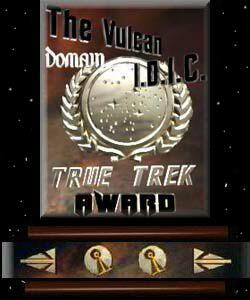
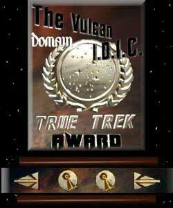
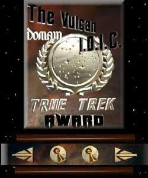

Awards
Here are the Awards this site has won.

August 1998
Hit The Button Below To Open Hailing Frequencies
 
Hit The Button Below To Open Hailing Frequencies

Hit The Button Below To Open Hailing Frequencies